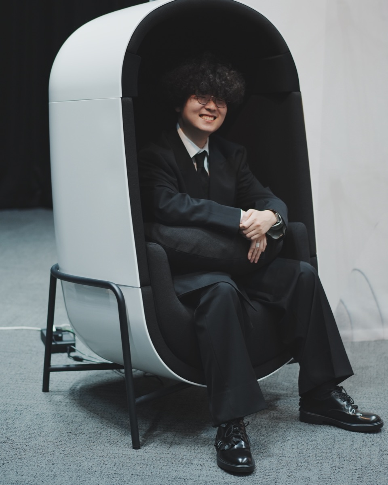

Representative
西澤 巧Takumi Nishizawa
代表社員
上智大学理工学部卒業、東京大学大学院 情報理工学系研究科 コンピュータ科学専攻 修了。2022年に大手コングロマリットへ入社し、新規事業領域のR&Dにて、ソフトウェア開発を中心に新たな体験価値を生む技術開発に取り組む。
2025年からはグループの金融事業会社へ出向し、ハプティクス技術を活用した新規事業の技術責任者として、アプリケーション開発、システム設計、共同研究を統括。あわせて合同会社たまご屋さんの代表を務める。